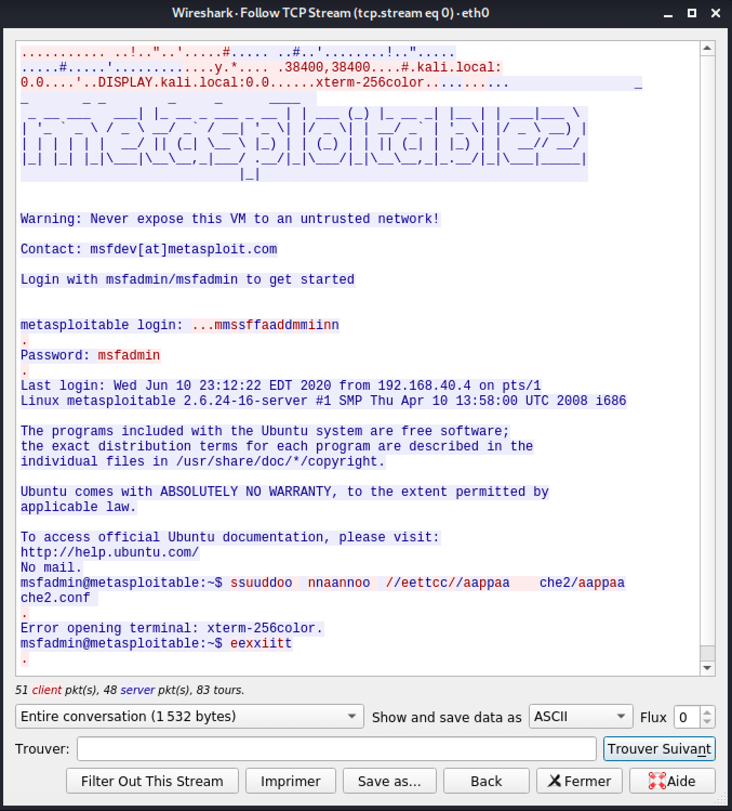

Écoute du réseau avec Wireshark
Wireshark est un analyseur de protocole réseau. Avec cet outil, nous pouvons collecter tous les paquets IP qui se transigent sur le réseau.
Dans notre laboratoire, Wireshark sera utilisé dans Kali. Normalement, VirtualBox gère le réseau comme un commutateur. Le trafic réseau entre 2 machines ne peut pas être vu par une 3ème machine.
Ex:
Machine A : Windows XP
Machine B : Metasploitable
Machine C : Kali
Quand la machine A communique avec la machine B, seulement la machine A et la machine B voient les paquets. Ceux-ci sont invisibles pour la machine C.
Il y a cependant une manière de contourner ceci, pour que Kali puisse voir le trafic des autres VM. C'est le mode promiscuous.
Dans les configurations de la VM Kali, dans la section Network, changez le Promiscuous Mode_ à Allow All

Démarrer une écoute du réseau
Écran principal de Wireshark
Pour démarrer l'écoute, double-cliquez sur eth0.
 1. Interface de filtre
1. Interface de filtre
2. Liste des paquets transmis
Avant d'aller plus loin, disons que nous sommes allés sur la page principale de Google.
Filtres
Une des premières choses qu'un ordinateur fait lorsque nous voulons accéder à une page Web et de faire un requête au serveur DNS.
Recherchons les paquets DNS dans notre capture

Regardez les deux premières entrées :
La première montre notre ordinateur (192.168.40.4) fait une demande de requête DNS au serveur DNS (192.168.2.1). La seconde entrée montre la réponse du serveur DNS à notre ordinateur.
Pour trouver la réponse spécifique à une requête, on peut activer un filtre en quelques étapes
 1. Cliquer sur la transaction dns
1. Cliquer sur la transaction dns
2. Dans la section Domain Name System (query), faire un clic droit sur l'item transaction id
3. Sélectionner le menu Prepare as filter
4. Sélectionner le menu Sélectionné
Ce que ça donne est le filtre dns.id==<id_transaction>
Il est aussi possible de l'inscrire manuellement

Pour voir les paquets qui sont reçus du serveur de Google, appliquons un différent filtre
ip.src == 172.217.13.195
Pour voir les paquets envoyés ET reçus du serveur de Google
ip.src == 172.217.13.195 or ip.dst == 172.217.13.195
Prendre note des 3 premières transactions avec le protocole TCP. On peut y voir clairement la connexion en trois étapes de TCP entre les deux intervenants.
À noter que ip.addr == 172.217.13.195 est équivalent à ip.src == 172.217.13.195 or ip.dst == 172.217.13.195
Autres recherches possibles :
tcp.port == 443
data-text-lines contains "twiki"
http.request.method == "GET"
nmap
Qu'arrive-t'il lorsque nous utilisons la commande nmap?
Exécutons la commande suivante :
sudo nmap -sS T4 192.168.40.7
Résultat de nmap dans Wireshark
Disons que ce n'est pas discret!!!
Nitko
Qu'arrive-t'il lorsque nous utilisons la commande nitko?
Exécutons la commande suivante :
nitko -h 192.168.40.7
Résultats de nitko dans Wireshark
 Impossible de passer inaperçu!
Impossible de passer inaperçu!
Protocoles insécures
Wireshark peut nous aider à espionner les victimes lorsqu'ils utilisent des protocoles non sécuritaires.
FTP
Voici la transaction ftp
Résultat de ftp dans Wireshark
 Avez-vous trouvé le mot de passe utilisé?
Avez-vous trouvé le mot de passe utilisé?
Telnet
Voici la transaction telnet

Résultat de telnet dans Wireshark
 Ce n'est pas très facile de voir ce qui se passe. Telnet envoie les touches appuyées une par une...
Ce n'est pas très facile de voir ce qui se passe. Telnet envoie les touches appuyées une par une...
Une fonctionnalité de Wireshark est de recueillir la communication ou conversation avec sa fonction suivre le flux
Résultat de suivre le flux

Important
Prenez quelques minutes pour faire votre cartographie de la leçon d'aujourd'hui!